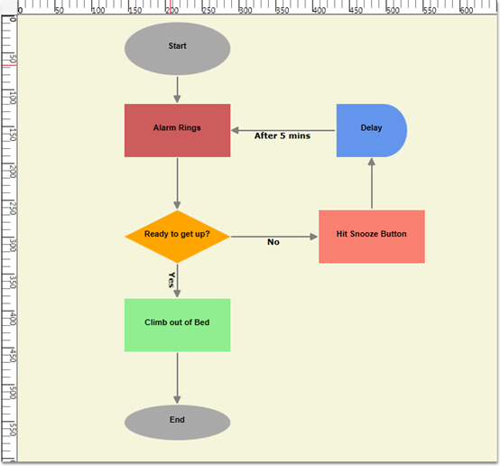
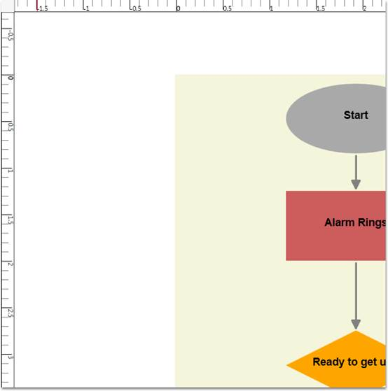
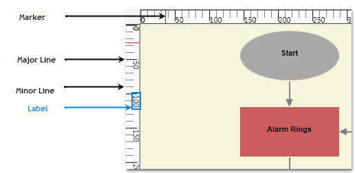
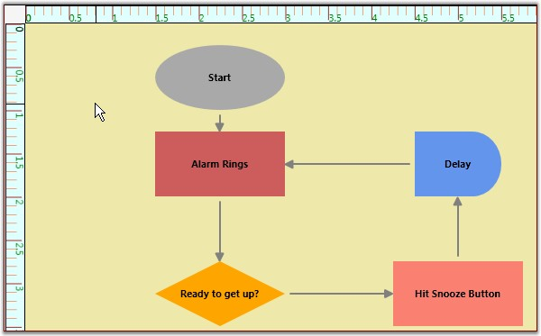

Rulers display the coordinates of elements on the diagram page. Negative label values get displayed on the ruler in case the page is panned to the right side. On Zooming, the ruler values get adjusted accordingly, to match with the current Zoom level. At any point, the ruler value always indicates the exact coordinates of the page and its elements. So when the page is zoomed, the interval values get halved or doubled depending upon the zoom level. By default, labels of the major lines in rulers will represent the pixel values using a label when there is a change in DigaramPage’s MeasurementUnit., The ruler and the Label will be updated so that the label indicates the respective unit values.
Panning, Zooming, MeasurementUnits are explained in later part of this documentation.
Horizontal and Vertical ruler can be initialized for DiagramView in two ways:
· Through XAML
· Through Code Behind
|
[XAML]
<!--Diagram Control--> <syncfusion:DiagramControl Name="diagramControl">
<!-- Model to add nodes and connections--> <syncfusion:DiagramControl.Model> <syncfusion:DiagramModel x:Name="diagramModel"> </syncfusion:DiagramModel> </syncfusion:DiagramControl.Model>
<!--View to display nodes and connections added through model.--> <syncfusion:DiagramView IsPageEditable="True" Bounds="0,0,12,12" Name="diagramView"> <syncfusion:DiagramView.HorizontalRuler> <syncfusion:HorizontalRuler Name="horizontalRuler" /> </syncfusion:DiagramView.HorizontalRuler> <syncfusion:DiagramView.VerticalRuler> <syncfusion:VerticalRuler Name="verticalRuler" /> </syncfusion:DiagramView.VerticalRuler > </syncfusion:DiagramView> </syncfusion:DiagramControl>
|
|
[C#]
DiagramView diagramView = new DiagramView(); diagramView.HorizontalRuler = new HorizontalRuler(); diagramView.VerticalRuler as VerticalRuler(); |
|
[VB]
Dim diagramView As New DiagramView() diagramView.HorizontalRuler = New HorizontalRuler() TryCast(diagramView.VerticalRuler, VerticalRuler()) |

Figure 133: Rulers

Figure 134: Ruler after Panning, zooming and Measurement unit as Inch
Several customizable options have been provided for the
horizontal and vertical rulers. These are common for both the
rulers.
Table 60: Property Table
|
Property |
Description |
Type of the property |
Value it accepts |
Any other dependencies/ sub properties associated |
|
Background |
Get or sets the ruler's background color. |
Dependency property |
Brush |
No |
|
MarkerBrush |
Gets or sets the MarkerBrush. |
Dependency property |
Brush |
No |
|
LabelFontColor |
Gets or sets the LabelFontColor. |
Dependency property |
Brush |
No |
|
MinorLinesStroke |
Gets or sets the MinorLinesStroke. |
Dependency property |
Brush |
No |
|
MajorLinesStroke |
Gets or sets the MajorLinesStroke. |
Dependency property |
Brush |
No |
|
MajorLinesThickness |
Gets or sets the MajorLinesThickness. |
Dependency property |
Double |
No |
|
MinorLinesThickness |
Gets or sets the MinorLinesThickness. |
Dependency property |
Double |
No |
|
MarkerThickness |
Gets or sets the MarkerThickness. |
Dependency property |
Double |
No |

Figure 135: Ruler Terminology
The following code shows how the properties can be set.
|
[XAML]
<syncfusion:DiagramView IsPageEditable="True" Bounds="0,0,12,12" Name="diagramView"> <syncfusion:DiagramView.HorizontalRuler> <syncfusion:HorizontalRuler Name="horizontalRuler" Background="#FFC6C6C6" LabelFontColor="Green"/> </syncfusion:DiagramView.HorizontalRuler> <syncfusion:DiagramView.VerticalRuler> <syncfusion:VerticalRuler Name="verticalRuler" Background="#FFC6C6C6" LabelFontColor="Green"/> </syncfusion:DiagramView.VerticalRuler > </syncfusion:DiagramView> |
|
[C#]
DiagramView diagramView = new DiagramView(); (diagramView.HorizontalRuler as HorizontalRuler).LabelFontColor = Brushes.Green; (diagramView.VerticalRuler as VerticalRuler).LabelFontColor = Brushes.Green; |
|
[VB]
Dim diagramView As New DiagramView() TryCast(diagramView.HorizontalRuler, HorizontalRuler).LabelFontColor = Brushes.Green TryCast(diagramView.VerticalRuler, VerticalRuler).LabelFontColor = Brushes.Green |

Figure 136: Custom Ruler